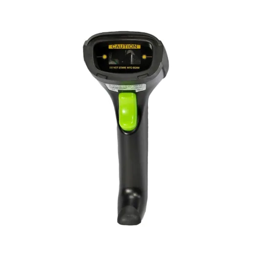

Inicio › Mouse, teclados y webcams

SAT · Modelo LD101RFPLUS
Scanner Usb Pistola Neg Sat Automatico Ld101Rf
L 1,145
En Acosa
Precio en cada tienda
| Tienda | Precio | Antes | Disponibilidad | |
|---|---|---|---|---|
| Acosa | L 1,145 | — | Disponible | Ver en tienda › |
Precios referenciales tomados de cada tienda el 21 de noviembre de 2026. El precio válido es el que muestra la tienda al comprar.
Historial de precio
Lo seguimos desde el 13 de noviembre. Precio más bajo registrado: L 1,145 en Acosa (13 de noviembre), igual que hoy. El precio no ha cambiado en ese tiempo.
Características
| Marca | Sat |
|---|---|
| Número de parte | LD101RF-PLUS |
| Garantía | 12 Meses |
Descripción
Lector De Códigos De Barras laser LD101RF PLUS es un equipo garantiza un excelente valor para los clientes que buscan un rendimiento excepcional y un beneficio económico en un producto completo. Cuenta con base para reposo, cable USB y gatillo para lectura de códigos pausada.
El SAT LD101RF Plus es un lector de código de barras confiable, diseñado para ofrecer precisión y durabilidad, gracias a su tecnología láser lineal y modos de escaneo.
Características:
• Tecnología láser lineal: Escanea códigos 1D con alta precisión.
• Velocidad eficiente: Realiza hasta 300 escaneos por segundo.
• Modos de activación: Manual, continuo y automático para adaptarse a tus necesidades.
• Diseño resistente: Soporta caídas de hasta 1.5m.
• Conexión práctica: Interfaz USB para